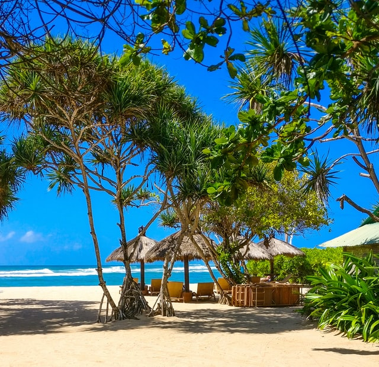

A new wave protests has just started in the Wembley Stadium
27 minutes ago World
-

34 munutes ago, Healthy Food
A healthy diet is essential for good health and nutrition. It protects you against many chronic noncommunicable diseases, such as heart disease, diabetes and cancer. Eating a variety of foods and consuming less salt, sugars and saturated and industrially-produced trans-fats, are essential for healthy diet.
-

15 munutes ago, Bali Travel
There are many ways to enjoy Bali to its fullest. You can choose to explore numerous magnificent natural spots or partake in a myriad of thrilling activities available for you to try on the island. If you favor stress-relieving activities, then going to various recreational resorts, clubs, or wellness retreats might be the best way to enjoy Bali. Looking for the best spots in Bali that offer an ultimate stress-relieving experience to achieve better wellness? Go and pamper yourself with a rejuvenating treatment at one of six wonderful spa retreats found across the Island of Gods. Let’s check them out below!
-

Now, Ukraine Conflict
Russian forces have launched a major assault on Ukraine, firing missiles on cities and military targets. The invasion by land, air and sea began after a pre-dawn TV address where Russian President Vladimir Putin demanded that Ukraine's military lay down its arms.